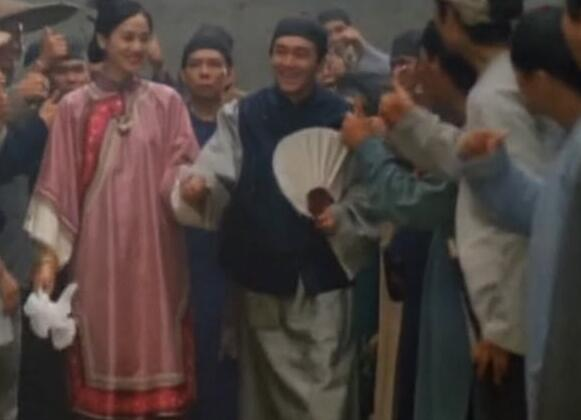
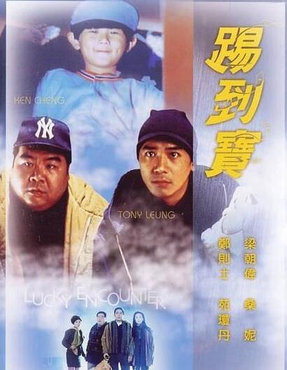

1
1
因为在那一年香港票房前五的电影都是周星驰主演的，这个成绩可以说是空前绝后。
90年代是香港电影的黄金时代，在91年周星驰主演的电影《逃学威龙》就破了香港年度票房冠军，他和周润发，成龙都成了票房的保证，于是当时就有了“二周一成”的说法。
在1992年，周星驰有七部作品，其中五部包揽了票房前五，同时排名第一的《审死官》和第二的《家有喜事》双破香港电影票房记录，周星驰也凭借《审死官》拿到了亚太电影节最佳男主角。
92年可以说是群星荟萃，那时的周润发还没远走好莱坞，成龙和李连杰都还未老去，还有着梁朝伟，梁家辉的虎视眈眈，而现在的星爷在当时只是星仔。
在那一年除了周星驰的七部电影，还有成龙的《双龙会》和《警察故事3超级警察》，李连杰的《笑傲江湖2东方不败》和《黄飞鸿2男儿当自强》，这些电影无一不是经典。
那一年由梁朝伟主演，杜琪峰导演的电影《踢到宝》票房成绩仅18万，值得一提的是《审死官》导演也是杜琪峰，即使如此，这部剧在豆瓣评分也有6.3分，说这些是为了告诉大家那一年与周星驰竞争的对手有多么强大，从侧面反映出获得这个票房成绩有多么不易。
当年的五部电影票房第一的《审死官》也是由杜琪峰执导，星爷和梅艳芳一起出演，第二的《家有喜事》集结了众多大咖，让人难以想象的是这部经典之作的拍摄仅用了13天，却通过他们的演技把故事，人物呈现的流畅清楚。
第三和第五是《鹿鼎记》两部曲，还记得那句话嘛，我对你的敬仰犹如滔滔江水连绵不绝，又如黄河泛滥一发而不可收拾。排名第四的《武状元苏乞儿》是周星驰第一次尝试的悲喜剧。
在这一年奠定了周星驰无可代替的喜剧之王的地位，可即使如此，香港金像奖和台湾金马奖却不承认周星驰的表演方式。在96年周星驰自导自演的《大内密探零零发》结尾处有一个模仿奥斯卡颁奖的片段，剧中周星驰认为奖项会颁给自己，但实际上却颁给了自己的老婆，这时有人解释道：用我们专家的话讲，你搞搞无厘头还行，有个P演技啊！这句话无疑是自嘲所谓的影评人对他演技的否定。
直到2002年金像奖才想起了这个屡破票房记录的周星驰，这一年周星驰和他的《少林足球》获得了14个提名，7个奖项，其中包含最有分量的最佳影片，最佳导演，最佳男主角三个奖项，不过这距离周星驰年已经有十年了。
周星驰在1992年所创的奇迹以前没有人能做到，以后应该也不会有人可以做到，92年被称为“周星驰年”当之无愧。